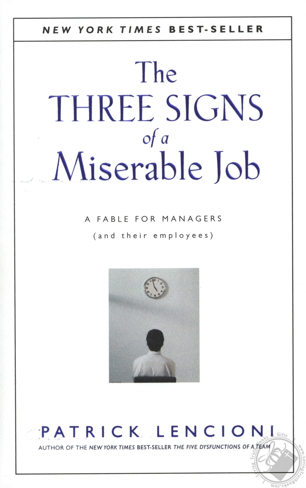

注：【】部分为笔者心得，非原文摘抄。
- 具备与社会各个阶层的人进行有效沟通的能力。
- 【评价公司的商业能力主要看三点：1，市场增长速度；2，所占市场份额；3，市场份额增长空间。】
- 【休息时不考虑工作，工作时不考虑休息。界限分明才有可能找到平衡点。】
- 【企业是商业的产物，但企业也是全体员工尤其是管理者人性的实物及延续。因此，业绩只能评价一个企业的商业能力，不能决定一家企业是否伟大，以为长远来看，每一家企业都会以被收购或破产告终。】
- 【员工反对上司的计划不见得是坏事，因为他们在最前线，可能他们有更务实更高效的解决方案。最可怕的其实是员工对一切无动于衷。】
- 【一定要让员工成为工作的受益者，这样他们才能对工作产生自豪感。】
- 【让员工说出对工作的不满意，比任由他们带着怨恨离开要好得多。】
- 【工作必须先量化，后实施。】
- 如果你不量化你所做的事情，如果你不认为你的工作会影响到其他的人，如果你觉得没有人对你是谁感兴趣，你的工作注定是一个噩梦。
- 【如果你无法让员工对他们的工作感到满意，你就无法满意他们的工作成果。】
- 【不满意的工作有三个表象：1，不被重视；2，对别人毫无影响；3，缺乏量化标准。】
- 【对事业发展起决定作用的因素是心态！】